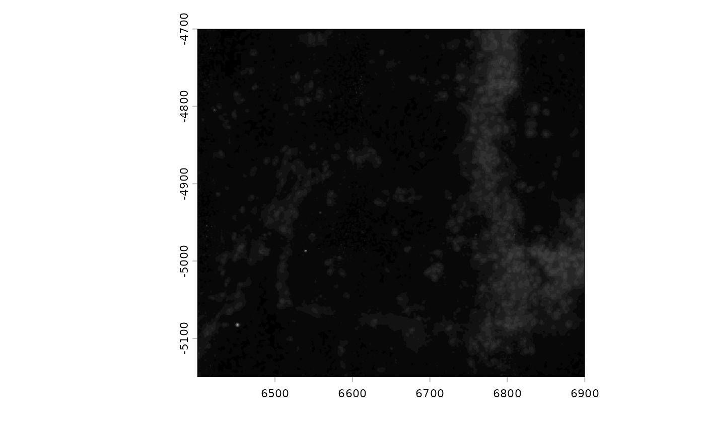
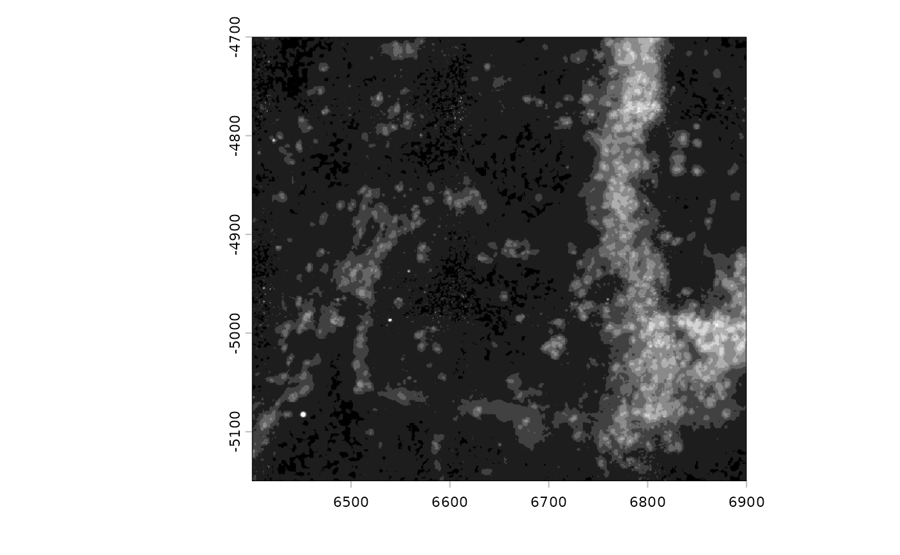
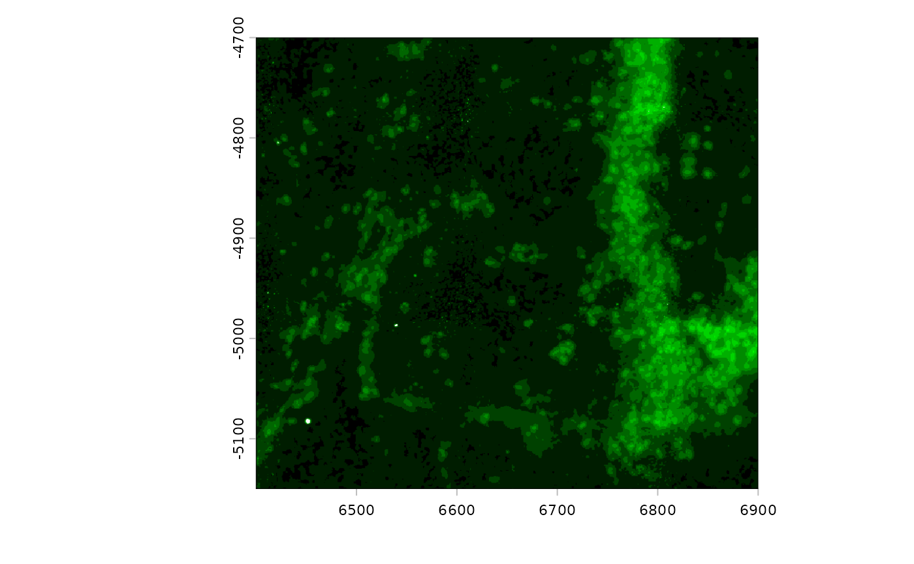
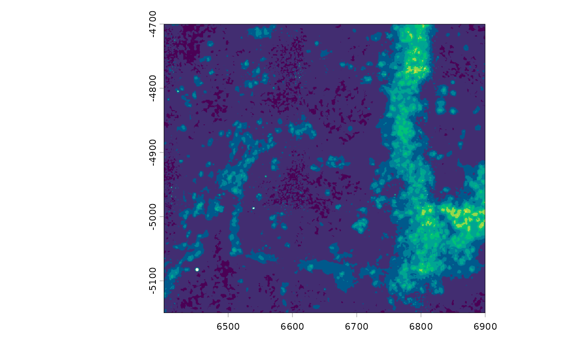

Giotto Image Tools
1. Overview
Giotto uses giottoLargeImage to represent images and
raster information. This is an S4 class built based on the
terra SpatRaster.
An older class called giottoImage based on the
magick package also exists, but is currently being phased out.
Ideally, giottoLargeImages will also be renamed to
giottoImage afterwards, simplifying the naming scheme.
The object structure of giottoLargeImage
giottoLargeImage
\- name (object name)
\- raster_object (terra raster object)
\- extent (current spatial extent)
\- overall_extent (spatial extent of original image - experimental)
\- scale_factor (pixels per coordinate unit - experimental)
\- resolution (coordinate units covered per pixel)
\- max_intensity (approximate maximum intensity value)
\- min_intensity (approximate minimum intensity value)
\- max_window (value to set as maximum intensity in color scaling)
\- colors (vector of color mappings provided as hex codes)
\- is_int (whether values are integers)
\- file_path (filepath to the image)
\- OS_platform (operating system)2. Sampling
Spatial images are often extremely large files. The high detail
(resolution), large spatial region captured, and precision of recorded
values (bitdepth) often results in files in the 10s of gigabytes. This
makes the full size images difficult to work with. One way to get around
this is to perform regular sampling of the image, touching only the
values of the original image that are needed generate a downscaled
representation. This is implemented in terra as
spatSample().
When plotting, Giotto optimizes the speed of this sampling
by striking a balance between terra::crop() and
terra::spatSample() to try to prevent sampling from
unnecessary regions, but also avoid large crop operations on the
fullsize image, which can be very costly. This is done through
plot_auto_largeImage_resample()
giottoLargeImages can also be resampled to other image
formats (magick and EBImage) in addition to
data.table and array using
GiottoClass:::.spatraster_sample_values()
These two functions are experimental and they will be exported using more common function names in the future.
3 Color scaling
distGiottoImage() can be used to look at the values
present within a giottoLargeImage. It is often the case
that the values recorded within an image do not map to the full set of
values allowed by its bitdepth. Giotto plots images by guessing
the bitdepth based on the estimated maximum value detected. This mapping
may not always be optimal.
library(GiottoClass)
gimg <- GiottoData::loadSubObjectMini("giottoLargeImage", idx = 2)## Warning: [rast] unknown extent
gimg <- GiottoClass:::.update_giotto_image(gimg) # update older images that are missing slots
plot(gimg)
distGiottoImage(giottoLargeImage = gimg)Since there are few values beyond 70, try setting
max_window to 70 in so that the color mapping better
represents the available information.
gimg@max_window <- 70
plot(gimg)
# plot(gimg, max_intensity = 150) # can be used without setting the slotThe colormap to use for an image can also be edited. The default for
a greyscale image is a monochrome black to white. Other color scales can
be supplied. For monochrome colorscales:
getMonochromeColors()
gimg@colors <- getMonochromeColors("green")
plot(gimg)
viridis_colors <- hcl.colors(256, palette = "viridis")
plot(gimg, col = viridis_colors) # can be used without setting the slot
TODOs:
- provide accessors for these slots
- make ggplot-based plotting also obey these settings
## R version 4.6.1 (2026-06-24)
## Platform: x86_64-pc-linux-gnu
## Running under: Ubuntu 24.04.4 LTS
##
## Matrix products: default
## BLAS: /usr/lib/x86_64-linux-gnu/openblas-pthread/libblas.so.3
## LAPACK: /usr/lib/x86_64-linux-gnu/openblas-pthread/libopenblasp-r0.3.26.so; LAPACK version 3.12.0
##
## locale:
## [1] LC_CTYPE=C.UTF-8 LC_NUMERIC=C LC_TIME=C.UTF-8
## [4] LC_COLLATE=C.UTF-8 LC_MONETARY=C.UTF-8 LC_MESSAGES=C.UTF-8
## [7] LC_PAPER=C.UTF-8 LC_NAME=C LC_ADDRESS=C
## [10] LC_TELEPHONE=C LC_MEASUREMENT=C.UTF-8 LC_IDENTIFICATION=C
##
## time zone: UTC
## tzcode source: system (glibc)
##
## attached base packages:
## [1] stats graphics grDevices utils datasets methods base
##
## other attached packages:
## [1] GiottoClass_0.6.0
##
## loaded via a namespace (and not attached):
## [1] sass_0.4.10 generics_0.1.4
## [3] SparseArray_1.12.2 gtools_3.9.5
## [5] lattice_0.22-9 digest_0.6.39
## [7] magrittr_2.0.5 evaluate_1.0.5
## [9] grid_4.6.1 fastmap_1.2.0
## [11] jsonlite_2.0.0 Matrix_1.7-5
## [13] backports_1.5.1 GiottoData_0.2.16
## [15] SingleCellExperiment_1.34.0 codetools_0.2-20
## [17] textshaping_1.0.5 jquerylib_0.1.4
## [19] abind_1.4-8 cli_3.6.6
## [21] rlang_1.3.0 XVector_0.52.0
## [23] Biobase_2.72.0 cachem_1.1.0
## [25] DelayedArray_0.38.2 yaml_2.3.12
## [27] otel_0.2.0 S4Arrays_1.12.0
## [29] tools_4.6.1 GiottoUtils_0.2.5
## [31] checkmate_2.3.4 SpatialExperiment_1.22.0
## [33] SummarizedExperiment_1.42.0 BiocGenerics_0.58.1
## [35] R6_2.6.1 magick_2.9.1
## [37] matrixStats_1.5.0 stats4_4.6.1
## [39] lifecycle_1.0.5 Seqinfo_1.2.0
## [41] S4Vectors_0.50.2 fs_2.1.0
## [43] htmlwidgets_1.6.4 IRanges_2.46.0
## [45] ragg_1.5.2 desc_1.4.3
## [47] pkgdown_2.2.1 terra_1.9-46
## [49] bslib_0.12.0 data.table_1.18.6.1
## [51] Rcpp_1.1.2 systemfonts_1.3.2
## [53] xfun_0.60 GenomicRanges_1.64.0
## [55] MatrixGenerics_1.24.0 knitr_1.51
## [57] rjson_0.2.23 htmltools_0.5.9
## [59] rmarkdown_2.31 compiler_4.6.1